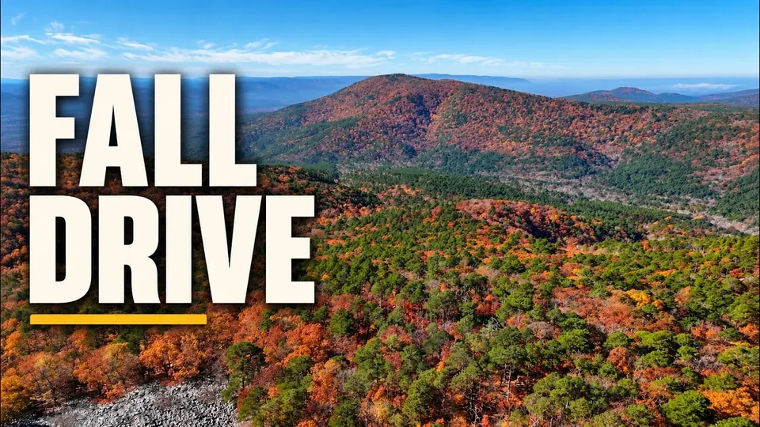

Destination
Oklahoma, Arkansas & the Plains
Fall color on the Talimena Scenic Byway, the Ozarks, Oklahoma landmarks, and a road trip from Dallas to the Black Hills and Devils Tower.
Films
Shorts
Subscribe on YouTube
Watch these films, and new ones as they are published, on the Totin My Pack channel.